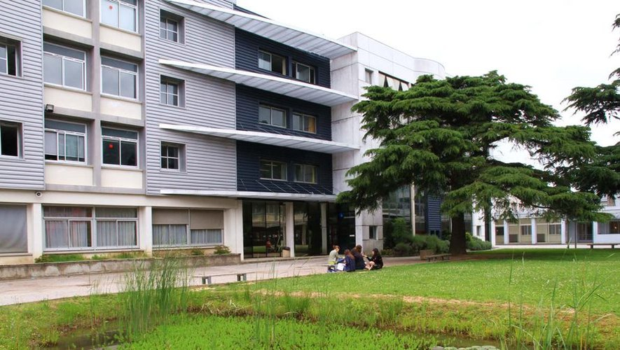
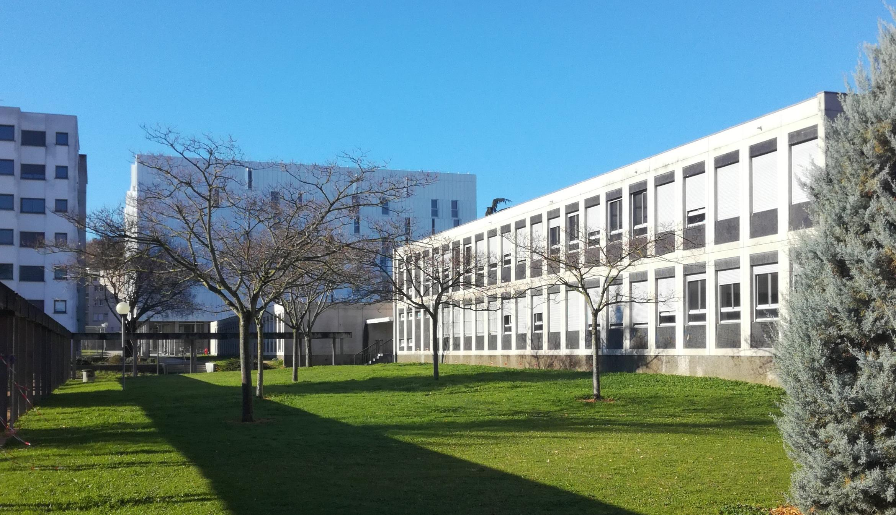
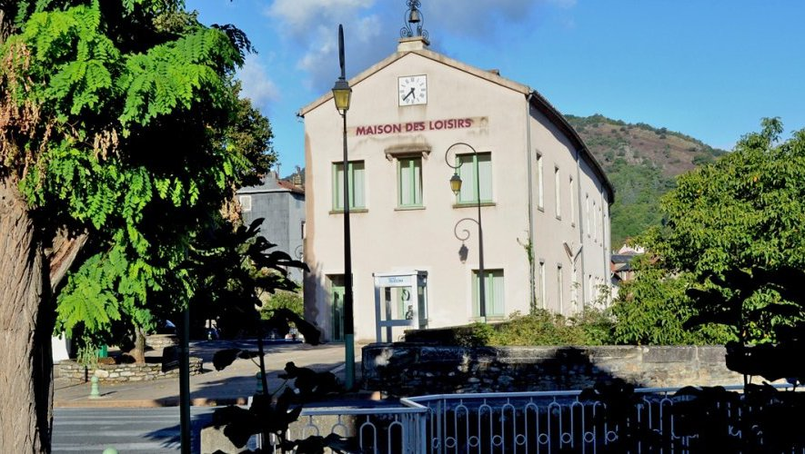
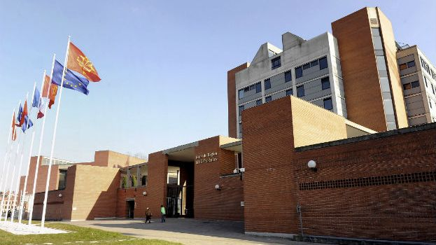
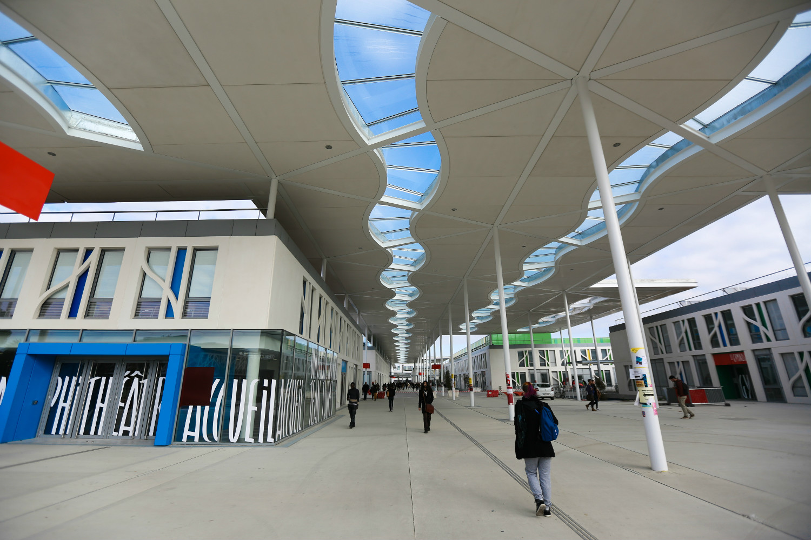

J'ai passé mon bac au sein du lycée Maréchal Soult situé à Mazamet dans le Tarn (81). C'est un lycée public qui regroupe plusieurs formations : générales, technologiques ainsi que professionelles. Ce lycée étant loin de mon lieu d'habitation, j'ai réalisé tout mon parcours lycéen à l'internat. Le fait d'être interne permet d'acquérir beaucoup de savoir vivre (surtout en communauté !), beaucoup d'autonomie en ce qui concerne le travail mais également beaucoup de souvenirs et permet de lier des amitiés fortes. Durant mes années dans ce lycée, j'ai réalisé un bac économique et social (option mathématiques) que j'ai obtenu avec la mention bien.

Juste après le bac, j'ai intégré une classe visant à obtenir un DUT information communication option communication des organisations. Ce DUT est proposé au sein de l'IUT de Ponsan de l'université Paul Sabatier de Toulouse. Là-bas, j'ai appris à créer des stratégies de communication pour les entreprises dans différents cas. Mais très vite, je me suis aperçu que cela ne me correspondait pas du tout et que je ne me voyais pas faire ce métier dans mon futur, j'ai donc décidé de finir l'année et de commencer à me renseigner afin de me ré-orienter l'année suivante. J'ai validé ma première année de DUT mais j'ai quand même décidé de me réorienter.

En parallèle de mes études, j'ai décidé en 2015 de passer mon BAFA (Brevet d'Aptitude aux Fonctions d'Animations). J'ai pris cette décision car d'une part, j'aime beaucoup m'occuper des enfants mais également car je voulais pouvoir travailler durant les vacances scolaires afin de gagner de l'argent en vue de voyager. J'ai donc passé mon BAFA ainsi qu'une qualification de surveillant de baignade en 2015. Cela m'a permis de travailler durant les vacances scolaires dans plusieurs structures d'accueils d'enfants(ALSH, Colonie de vacances, babysitting). J'ai nottament beaucoup travaillé au sein d'un ALSH situé à Saint Pons de Thomières (34) nommé "Les aventuriers du Jaur". Cette expérience professionnelle m'a beaucoup appris. J'ai amélioré mes compétences en travail d'équipe, ma patience et mon organisation mais j'ai également beaucoup appris des enfants. Cet ALSH accueille un public d'enfants ayant pour la plus part des profils particuliers et un lourd passé familial, cela m'a permis de me remettre en question sur certains points et d'évoluer positivement.

Pour clôturer la licence, nous avons dû réaliser un stage de plusieurs mois dans la structure de notre choix. J'ai réalisé un stage de 3 mois au sein de l'Hôtel de Région de Toulouse. Durant la période, j'ai réalisé des missions de gestion de base de données et j'ai assisté la cheffe de projet dans ses missions. Ce stage représentais ma première vrai expérience professionnelle dans le domaine du développement et du logiciel informatique. Cette expérience a été très bénéfique pour moi car cela m'a permis de prendre confiance en mes compétences professionnelles. En effet, le fait de se confronter au monde professionnel permet de faire face à des situations nouvelles qui sortent du cadre scolaire. Ce stage m'a permis de progresser dans le domaine des bases de données et m'a également permis d'être rassurée sur mon choix d'orientation. Le bilan est donc très positif.

Après ma première année en DUT, j'ai donc décidé de me réorienter. J'ai choisi de postuler à la licence MIASHS (Mathématiques Informatique appliqués aux Sciences Humaines et Sociales) car j'avais dans l'idée de devenir professeur des écoles. Comme cette licence offre une option qui prépare aux concours ainsi qu'au métier en lui-même, c'était, à mon sens, la licence parfaite. Durant les 2 premières années, j'ai découvert le monde du développement informatique, monde que je ne connaissais pas initialement. Cela m'a beaucoup plu et j'ai pu projetter ma future carrière professionnelle au sein de ce monde là. C'est pour cela que j'ai changé d'avis et en troisième année de licence j'ai décidé de postuler dans le parcours informatique qu'offre cette licence. Durant la troisième année, l'informatique est devenu une matière majeure. En effet, à la différence des 2 premières années où les matières mathématiques sont majeures, cette troisième année a mis à l'honneur le développement informatique. En une année, j'ai énormement gagné en compétences et cela m'a conforté dans mon choix d'orientation. C'est donc tout naturellement que j'ai postulé en fin de troisième année au master ICE (Informatique Collaborative en Entreprise).
J'ai décidé de postuler au master ICE (Informatique Collaborative en Entreprise) car c'était la suite logique, pour moi, de mon parcours en Licence MIASHS. Aussi, le fait que ce master soit uniquement réalisable en alternance a été un point positif essentiel.
En effet, le fait de travailler en entreprise permet d'augmenter considérablement ses compétences mais aussi de commencer à s'habituer au monde professionnel en vue de "l'après master". Les cours dispensés dans ce master sont très intéressant
et les projets de groupe sont très formateurs.
Je réalise mon entreprise au sein de la société Sopra Steria. Je réalise des missions de développement. Cette alternance me permet de progresser un peu plus chaque période et
d'acquérir des connaissances autres que ce qui nous ai montré en cours. L'équipe que j'ai rejoint en Septembre m'a très bien intégré.